|
ExtractFace
Copyright (c) 2015-2016 Alain Rioux
|
| See Credits about the logo |
- Start Mozilla Firefox;
- Start MozRepl addon if you didn't set the Activate on startup option;
- When using ExtractFace, be sure that MozRepl is started.
- You can check the Activate on startup option so
it will start automatically when you use Firefox.
- MozRepl is listening for connections on the default port 4242.
Be sure that you don't have a firewall that blocks the connection.
- Login to your profile;
- Go to your target profile;
- Right-click on ExtractFace taskbar icon to popup the menu.
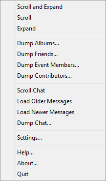
Facebook, like many other websites, use Javascript/Ajax to display content to
the user. The page is the same but the content change as user click on things or
do something. Often, to be able to see the whole page, you have to scroll and
click lot of things which could be very time consuming if you want it all.
To automate that process, ExtractFace provides the Scroll and
the Expand function. Both would work on many pages of a Facebook
profile as the Timeline page or a page with photo and comments.
Here are some more explanations about these functions:
- Scroll: This function will scroll down the page until the end
or after a maximum of repetitions that you select in the Settings
window.
- Expand: This function will click on See more
and other similar links. The Expand function can be customized.
See Settings for details.
- Scroll and Expand: This function alternates between
the Scroll and the Expand function so
it scrolls one time, expands, scrolls again, expands, and so on... If
you set a maximum of repetition for the Scroll, it will
apply for this one also.
These functions don't check if you are on the right page. So you have to
choose it manually. To use these function on a page with photo and
comments, you must open the page in normal view, not a popup window.
To do this:
- Right click on the photo and select Open Link in New Tab
- In the new tab, close the popup
This function can be use to gather all (or selected) albums of photos.
To be able to use it, you must be anywhere in the target profile.
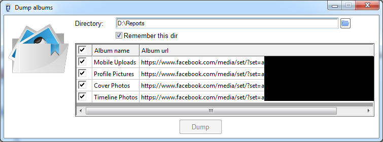
When you select this function, ExtractFace:
- Displays the Dump albums window (shown above)
- Checks if you are already in the photos_albums page
- If not, goes to the right page
- Gathers the profile's name to propose as filename
- Shows available albums
Like other "Dump" function, you have to select a directory where albums
and photos will be saved. Options are:
- Include publication date: If you select this option,
ExtractFace will gather the date that the photo or video has been published.
Because ExtractFace has to open each page to get that information, using
this option will take more time.
- Open output HTML file: At the end of the process, the HTML
album page will be opened in your default browser.
- Open album folder: At the end of the process, the folder
where the album have been saved will be opened in Window Explorer.
When ready, you can click on Dump to start the process.
ExtractFace will create a directory for each album selected and download all
the images from that album. At the end of the process, ExtractFace will open
the album page created with all albums and photos/videos.
This function can be use to gather all friend lists (or selected) of a
profile. It produces a XLSX file that contains details of profile's friends.
To be able to use it, you must be anywhere in the target profile.
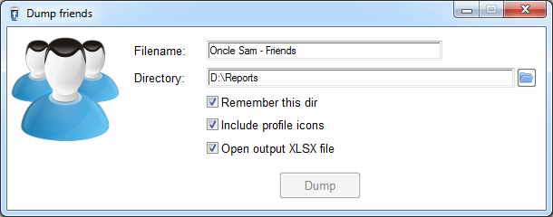
When you select this function, ExtractFace:
- Displays the Dump friends window (shown above)
- Checks if you are already in the friends page
- If not, goes to the right page
- Gathers the profile's name to propose as filename
- Shows available friend list categories
You have to select a directory where the output XLSX file will be saved.
Other options are:
- Include profile icons: Image of profiles are included
in the spreadsheet.
- Open output XLSX file: Open the report at the end of the
process.
- Use safe mode: By default, ExtractFace connect to Firefox
to parse the page. If it's faster, it's also unstable and causes many crashes.
With huge friend page (few thousands and more), it may cause a fatal crash
("out of memory!"). With this option, ExtractFace uses a different parsing
method that don't cause crash, but it's running much more slowly.
When ready, you can click on Dump to start the process.
The report will look like this:
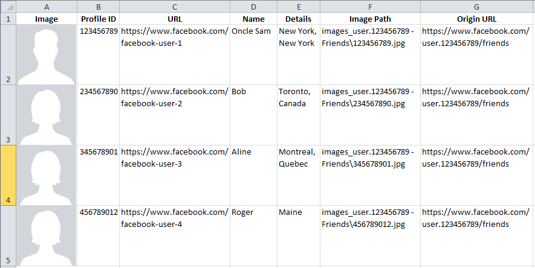
This function can be use to gather the guest lists associated to an
event. It produces a XLSX file that contains some details on the
event members. To be able to use it, you must be in the main page of
the event.
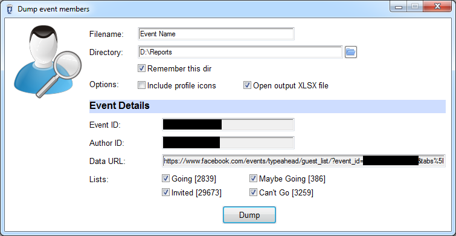
When you select this function, ExtractFace:
- Displays the Dump event members window (shown above)
- Checks if you are in the events page
- If not, displays an error message
- If yes, gathers details about the event like the event ID, the profile
ID of the author and the data URL. It also gathers details about the
guest lists. There are four guest lists for each event:
- Going (or went);
- Maybe;
- Invited;
- Declined (Can't Go);
- Proposes a name for the XLSX file.
You have to select a directory where the XLSX file will be saved.
You may also select the Include profile icons option to get every
images associated with the profiles of the event members (much more slowly).
When ready, you can click on Dump to start the process. When you
press Dump, ExtractFace:
- Gets the first data set which contains the four guest list members
(max. 500 members for each list).
- Parses the data to gathers event member details.
- If you select the Include profile icons option:
- Downloads profile icons: Unlike other functions of ExtractFace,
profiles icons are not included in the downloaded data, so they have to
be downloaded separately. That's why it took much more time. During the
process, ExtractFace may crash a few times. This is normal, but it may
result corrupted image files. So at the end, ExtractFace will check
integrity of every image files and replace corrupted ones (download it
again).
- Creates the XLSX file, with a spreadsheet for each guest list.
At the end of the process, ExtractFace display the XLSX file if
the option Open output XLSX file is checked.
Report will look like the one produced by Dump
Friends.
Important: For
each guest list, you will get a maximum of 500 members. If you think not
all event members have been gathered (yes it may happen!), you can restart
the process, but don't delete old files. Some will be replaced, but profile
icons already downloaded will not be downloaded again, so it's gonna be
faster.
This function can be used to list all persons that contribute to a particular
page. Like Scroll and Expand functions, this one can
be used one any page that contains comments and/or Likes. Prior to use this function,
you have to choose the page and use the Scroll and Expand
function if necessary.
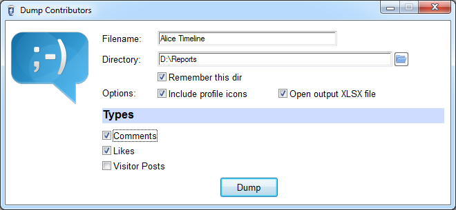
Available options are the same that are used in some other functions
like Include profile icons and Open output XLSX
file.
This function produces a XLSX file like Dump
Friends and Dump Event Members, but
there is an additional column, that contains the number of times a
contributors is found. Types of contributors supported are:
- Comments: All person that post a comment on the page.
It includes replies. As comments are all on the main page, this one is the
fastest.
- Likes: Any types of Likes. This one should be the
slowest, because ExtractFace has to open a page for every group of Likes.
- Visitor Posts: You can find Visitors Posts on the left-hand
side of some profile. When you select this type, a popup will appear and will
be automatically scrolled.
ExtractFace provides some functions to help you extract conversations
from your Facebook profile. To be able to use these function, you must
select See All from the chat menu, then select any of the
conversation on the left side. In the address bar of your browser, you
should have an address like "https://www.facebook.com/messages/[id of the
other person].
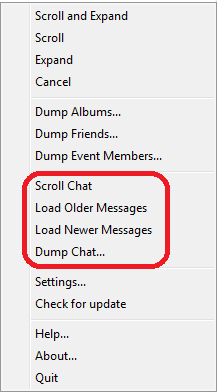
The Scroll Chat function will scroll until it reaches the
beginning of the conversation. If you only want a part of the conversation,
you can do a search by using the Search messages in the conversation
function provided by Facebook. When you find the message, you can use Load
Older Messages and/or Load Newer Messages functions
in ExtractFace to show older or newer messages around the searched one.
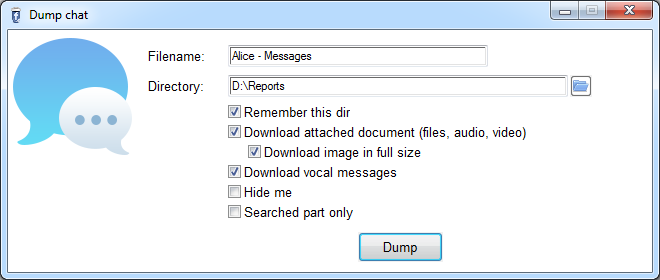
When you are ready, you can use the "Dump Chat" function. When you select
it, ExtractFace:
- Displays the Dump Chat window (shown above)
- Checks if you are in the messages page
- If not, shows an error message
- If yes, gathers the interlocutor's name to propose as filename
If you select the Download attached document option,
ExtractFace will try to gather attached files in messages like images, videos,
or any other files included. If you don't select the option, it doesn't mean
that the output HTML file will not contain images in, but these images won't be
stored as local content. When the output HTML file is opened in Firefox, you
can use "Save as" function to save the result. Firefox will then saved the
images as local.
If you select the Download image in full size option,
ExtractFace will try to download the full size version of images (images sent
by the user), when it's possible. A link in the output HTML file will be added.
Be aware that sometimes, the image in full size has the same filename so it
will replace the smaller one in the output HTML file.
If you select the Download vocal messages option, ExtractFace
will try to gather the vocal messages included in the conversation.
If you select the Hide me option, your details (profile
icon, profile URL and profile Name) will be blacked out.
Searched part only option must be checked if you did a
search by using the Search messages in the conversation
function provided by Facebook. Otherwise, the dumped chat will be the most recent
messages that were displayed before you did the search.
The output HTML file should look like this:
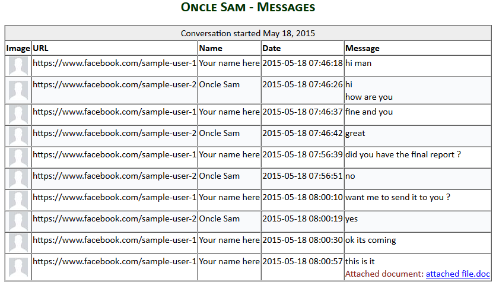
Here are some explanations about some elements that can be found in a
Facebook conversation:
- Images sent by the user:
The are a lot of ways to add this kind of files to a conversation, but ExtractFace
should support them all. If not, contact the author.
- Facebook images: Like
emoticons, stickers or animated images. ExtractFace should support them all. If not,
contact the author.
- Videos: If you select the
Download attached document option, ExtractFace will load the page
of the video and gather the video image and the video file. A clickable image will
be in the output HTML file. If you didn't select the option, a simple link to the
video will be used.
- Vocal messages: To download
vocal messages, ExtractFace must open the mobile version of your profile. Then, it will
search the chat, browse it all, find and download the vocal messages. When it produces
the output HTML file, ExtractFace will insert links to vocal messages at the right place.
If you didn't select the option, a name for the vocal messages will be proposed (based
on the timestamp of the message).
- GPS coordinates: When available,
ExtractFace will gather GPS coordinates and will add a Google map link in the output HTML
file;
- Notifications: Ex.: "You
missed a call", "Seen", "Sent from Mobile", etc. ExtractFace should
support them all. If not, contact the author.
Directories that could be created by ExtractFace (if needed):
- images_[page title]: For the
image files
- videos_[page title]: For the
video files
- pj_[page title]: For attached
documents
- vm_[page title]: For vocal
messages
Dumping huge conversation
If you have to dump a huge conversation (thousand of messages) and you can't display
it all in Firefox because regular scrolling got stuck before reaching the beginning of the
conversation. There is the solution:
- Use regular scrolling and dump the most recent messages;
- Reload the page in Firefox (to free some memory space);
- Until you reach the begining of the conversation:
- Use the Search messages in the conversation function in Facebook to
search the older message displayed in the part you already dump;
- Use the Load Older Messages function in ExtractFace. To prevent crash
Firefox, you could set a limit of scrolling (See Settings);
- Dump the displayed part by checking Searched part only option;
- Reload the page in Firefox;
There are a few parameters that can be set in ExtractFace.
General options
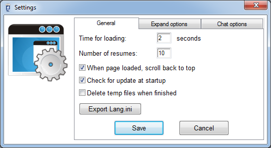
In Tool section, we have the following functions and options:
- Export Lang.ini: Use this function to translate ExtractFace GUI.
See Translation for help about this
functionality.
- Check Update: Check on le-tools.com if a tool update is available.
- Check for update at startup: When ExtractFace starts, check on
website for available update of the tool.
In Functions section, you have:
Time for loading: Time to wait when a page (or new content) must
be loaded in Firefox. Default value is 2 seconds. As ExtractFace
must often gather content from internet, it can be affected by network latency. When
ExtractFace tries to access data in Firefox too fast, it may crash the process. ExtractFace
has been designed to recover from crash like this, but it may slow down the whole process.
If it happends too often, you can try to increase this value.
Number of resumes: Number of times that ExtractFace will
restart a crashed process before giving up. Default value is 10.
Delete temp files when finished: Applies to most of functions. When
ExtractFace downloads page, it saves data in a temp directory. If this options is checked,
the temp directory is deleted when function ends.
Enable debug logging: If you check this option, a debug.log will
be created in the program folder. Every crash error will be logged in the file. This
could be useful for troubleshooting.
Scroll options
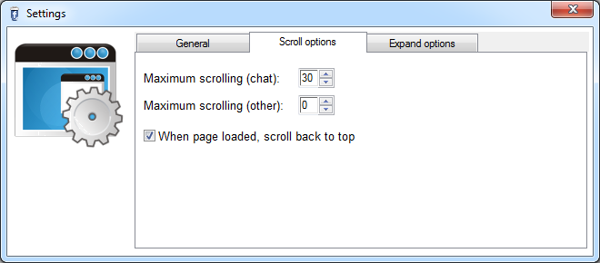
- Maximum scrolling (chat): When you use scroll chat functions, ExtractFace
scrolls, waits for the additional content to display, scrolls again, and so on until it reaches
the beginning or the end of the conversation. Unfortunately, it could get stuck if the number
of messages is too important. This field can be used to set a limit. The value represent the
number of times ExtractFace will scroll, not the number of messages displayed. Default value
is 0 which means no limit.
- Maximum scrolling (other): Like the previous option, but it is
asscoiated to the general Scroll function. Default value
is 0 (no limit).
- When page loaded, scroll back to top: When a page is fully loaded
(after scrolling to the bottom), scroll back to top. Default is checked.
You may uncheck this option if you want to easily see if scrolling fails to load all.
Expand options

These options are related to the Expand function and
the combined Scroll and Expand function. Every option
allows to expand a particular type of content: additional text, comments or posts.
ExtractFace
Copyright
(c) 2015-2016 Alain Rioux